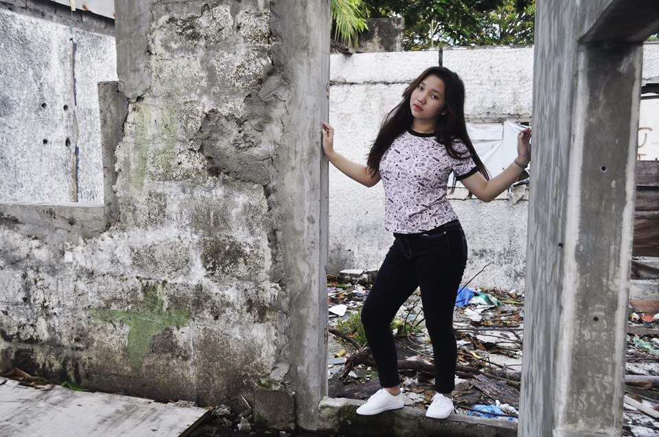

Aura Nina Abina
Personal Background
- Gender: Female
- Age: 22
- Date of Birth: July 9, 2001
- Place of Birth: City of San Fernando, La Union
- Civil Status: Single
- Nationality: Filipino
- Religion: Roman Catholic
Primary
- Saint Jude Montessori Educational Center
- City of San Fernando, La Union
- 2007-2013
Secondary
- Christ the King College
- City of San Fernando, La Union
- 2013-2019
Tertiary
- University of Santo Tomas
- Espana Blvd, Samapaloc, Manila
- Bachelor of Science in Civil Engineering
- 2019-2023
- National Civil Engineer Symposium
- UP Film Institute, U.P Diliman
- Quezon City
- September 2022
- Civil Engineering Seminar on “Bridge Engineering”
- Bulacan State University
- City of Malolos Bulcan
- March 2023
- Civil Engineering Seminar on R.A 9184 “bidding”
- University of Santo Tomas
- Sampaloc, Manila
- January 2022
- Seminar and Field trip Course on ”Solid Waste Management”
- University of Santo Tomas
- Sampaloc, Manila
- January 2023
Special Skills
- Computer Literate
- Assertive, Hardworking ang highly responsible
- Planning and organizational Skills
- Communication Skills
- Managerial Skills
Character References
- Prof. Philipina A. Marcelo,PhD
- Dean, Faculty Engineer
- University of Santo Tomas
- Engr. Anthony Cruz
- Civil Engineer II
- University of Santo Tomas